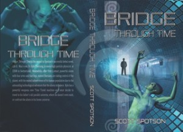

From the journal
Recommended Indie Books from 2017
As of New Year's Eve, here are the indie books I granted five stars in 2017. (One isn't an indie novel, "Gone Girl").



- Gone Girl (thriller) https://www.goodreads.com/book/show/1928804
- Cruising Alaska on a Budget (non-fiction, travel) https://www.goodreads.com/book/show/34687941-cruising-alaska-on-a-budget
- Tommy Turner's Tremendous Travels (children's) https://www.goodreads.com/book/show/30211294-tommy-turner-s-tremendous-travels
- Liquorice Shoelace (short story) https://www.goodreads.com/book/show/32597546-liquorice-shoelace
- The Daughters Daring and the Crystal Sea (children's) https://www.goodreads.com/book/show/35005267-the-daughters-daring-2-the-crystal-sea
- The Yosei (urban fantasy) https://www.goodreads.com/book/show/35067430-the-yosei
- Portal Island graphic novel series #2 (graphic novel) https://www.goodreads.com/book/show/35144444-side-effects
- Water Lily (urban fantasy) https://www.goodreads.com/book/show/29627042-water-lily
- Worlds With Ruby (urban fantasy) https://www.goodreads.com/book/show/34681537-worlds-with-ruby
- Charlie Bingham Gets Serious (children's) https://www.goodreads.com/book/show/27393890-charlie-bingham-gets-serious
- Koolura and the Mayans (children's) https://www.goodreads.com/book/show/29545044-koolura-and-the-mayans
- Arrival at Portal Island graphic novel series #1 (graphic novel) https://www.goodreads.com/book/show/31114838-arrival-at-portal-island
- Under a Desert Sky (thriller) https://www.goodreads.com/book/show/19069689-under-a-desert-sky
- The Shrinkage Situation (humour) https://www.goodreads.com/book/show/30843611-the-shrinkage-situation
- Secret of the Egyptian Curse (children's) https://www.goodreads.com/book/show/34176088-secret-of-the-egyptian-curse
- The Throne of Light (children's) https://www.goodreads.com/book/show/30828224-xar-vichattan---the-throne-of-light